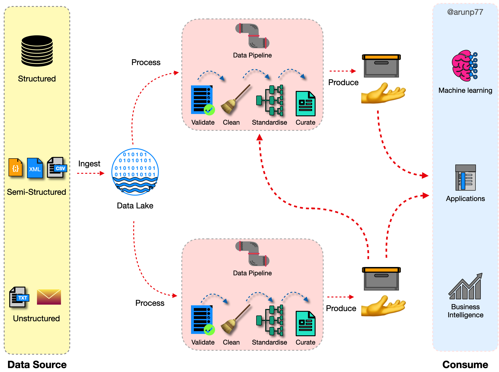

Datawarehouse and data lake Architecture
Datawarehouse
- A data warehouse, or enterprise data warehouse (EDW), is a centralized and integrated repository of data that aggregates data from different sources into a single, central, consistent data store to support data analysis, data mining, artificial intelligence (AI), and machine learning.
- It serves as a structured storage system for collecting and managing large volumes of data from various sources within an organization.
- A data warehouse system enables an organization to run powerful analytics on huge volumes (petabytes and petabytes) of historical data in ways that a standard database cannot.
- A data warehouse is specially designed for data analytics, which involves reading large amounts of data to understand relationships and trends across the data. A database is used to capture and store data, such as recording details of a transaction.
- Unlike a data warehouse, a data lake is a centralized repository for all data, including structured, semi-structured, and unstructured. A data warehouse requires that the data be organized in a tabular format, which is where the schema comes into play. The tabular format is needed so that SQL can be used to query the data. But not all applications require data to be in tabular format. Some applications, like big data analytics, full text search, and machine learning, can access data even if it is ‘semi-structured’ or completely unstructured.

Building Blocks of Data Warehouse
The central and most fundamental building block of a data warehouse is the Data Warehouse itself. It serves as the primary repository for storing and managing data from various source systems. The data warehouse is specifically designed for efficient querying and analysis, making it the core component that enables organizations to consolidate and leverage their data for reporting, business intelligence, and analytics purposes.
Data warehousing involves several building blocks that work together to create an effective data management and analytics environment. Here are the key building blocks of a data warehouse:

- Source Systems: These are the systems or data repositories where data is generated or collected. Source systems can include databases, applications, spreadsheets, logs, and more.
- Data Extraction (ETL - Extract, Transform, Load): ETL processes extract data from source systems, transform it into a suitable format, and load it into the data warehouse. This step involves data cleansing, validation, and aggregation.
- Staging Area: The staging area is an intermediate storage location where data is temporarily held before being loaded into the data warehouse. It allows for data validation and reconciliation.
- Data Warehouse: The central repository where data from various sources is stored for reporting and analysis. It is structured for efficient querying and analysis.
- Data Marts: Data marts are subsets of the data warehouse designed for specific business units or departments. They store data relevant to particular business areas, making it easier for users to access and analyze the data they need.
- Metadata Repository: Metadata is data about data. A metadata repository stores information about the structure, source, and meaning of the data in the data warehouse. It helps users understand and locate the data they need.
- Business Intelligence (BI) Tools: BI tools are used to query, analyze, and visualize data stored in the data warehouse. They provide a user-friendly interface for creating reports, dashboards, and data visualizations.
While the other components, such as ETL processes, data marts, metadata repositories, and business intelligence tools, play crucial roles in the data warehousing environment, the data warehouse stands as the central hub where data is organized and made accessible to users for decision-making and analysis. It is the backbone of the entire data warehousing architecture.
How does a data warehouse work?
- A data warehouse may contain multiple databases.
- Within each database, data is organized into tables and columns.
- Within each column, you can define a description of the data, such as integer, data field, or string.
- Tables can be organized inside of schemas, which you can think of as folders.
- When data is ingested, it is stored in various tables described by the schema.
- Query tools use the schema to determine which data tables to access and analyze.


Architecture of the datawarehouse
- Data Source Layer (Bottom tier): The bottom tier consists of a data warehouse server, usually a relational database system,
which collects, cleanses, and transforms data from multiple data sources through a process known as Extract, Transform, and Load (ETL) or a
process known as Extract, Load, and Transform (ELT).
- The first tier, often referred to as the bottom tier, consists of various data sources.
- Data is extracted from operational databases, external systems, flat files, or other sources.
- Initial processing may occur at this stage, such as data cleansing and extraction.
- Data Warehouse Layer (Middle tier):
- The second tier, known as the middle tier, is the core data warehouse layer.
- ETL (Extract, Transform, Load) processes operate in this layer to transform raw data into a format suitable for analysis.
- The transformed data is loaded into the data warehouse database, following dimensional modeling principles (star schema or snowflake schema).
- The data warehouse stores structured and organized data, including fact tables (containing metrics) and dimension tables (containing descriptive attributes).
- This layer often includes a staging area for temporary storage before data undergoes transformations.
- ROLAP
- MOLAP
- HOLAP
- Frontend/Client Layer (Top tier): The top tier is represented by some kind of front-end user interface or reporting tool, which enables end users to conduct ad-hoc data analysis on their business data and presents results through reporting, analysis, and data mining tools.
- The third tier, also known as the top tier, is the frontend or client layer.
- Business users interact with this layer to access and analyze the data stored in the data warehouse.
- Business Intelligence (BI) tools, reporting tools, and analytical applications reside in this layer.
- Users can run queries, generate reports, and visualize data to gain insights and make informed decisions.
- OLAP (Online Analytical Processing) engines facilitate multidimensional analysis.
The three-tier architecture of a data warehouse involves three distinct layers, each serving specific functions in the data processing and reporting pipeline. Here's an overview of the three-tier structure:
OLAP and OLTP systems
Datalake

A data lake is a centralized repository that stores all your structured and unstructured data at any scale. You can store your data as-is, without having to structure the data, and run different types of analytics—from dashboards and visualizations to big data processing, real-time analytics, and machine learning to guide better decisions.
Data lakes are often used in conjunction with data warehouses, but they are not the same thing. A data warehouse is a structured data store that is optimized for querying and reporting on historical data. A data lake, on the other hand, is a scalable and flexible data store that can store any type of data, regardless of its structure.
Benefits¶
Some of the benefits of using a data lake include:
- Scalability: Data lakes can scale to store any amount of data.
- Flexibility: Data lakes can store any type of data, regardless of its structure.
- Performance: Data lakes can be optimized for different types of analytics, including batch processing, real-time analytics, and machine learning.
- Cost-effectiveness: Data lakes can be more cost-effective than traditional data warehouses, especially for storing large amounts of data.
Chalanges¶
Some of the challenges of using a data lake include:
- Complexity: Data lakes can be more complex to manage and maintain than traditional data warehouses.
- Security: Data lakes need to be properly secured to protect sensitive data.
- Governance: Data lakes need to be properly governed to ensure that data is used in a responsible and ethical manner.
Overall, data lakes are a powerful tool for storing and analyzing large amounts of data. They can be used to support a wide range of business applications, including customer intelligence, fraud detection, and product development.
Applications¶
Here are some examples of how data lakes are being used in the real world:
- Retail: Retailers use data lakes to store and analyze customer data, product data, and sales data. This data can be used to improve customer targeting, product recommendations, and inventory management.
- Finance: Financial institutions use data lakes to store and analyze customer data, transaction data, and market data. This data can be used to improve risk management, fraud detection, and investment decisions.
- Healthcare: Healthcare organizations use data lakes to store and analyze patient data, medical research data, and clinical trial data. This data can be used to improve patient care, develop new treatments, and reduce costs.
Data lakes are a powerful tool for storing and analyzing large amounts of data. They can be used to support a wide range of business applications, and they are becoming increasingly important as the amount of data that businesses collect and store continues to grow.
| Aspect | Data Warehouse | Database | Data Lake | Data Mart |
|---|---|---|---|---|
| Purpose | Designed for analytical processing. | Designed for transactional data management. | Designed for storing raw, unstructured data. | Subset of a data warehouse focused on specific business areas. |
| Data Type | Contains integrated and historical data. | Typically contains structured, transactional data. | Stores raw and structured, semi-structured, or unstructured data. | Contains summarized and pre-aggregated data for specific use cases. |
| Data Structure | Typically follows a structured schema (Star Schema or Snowflake Schema). | Follows a normalized schema (relational database model). | Schema-on-read, allowing flexible data structures. | Follows a dimensional model (Star Schema) for ease of reporting. |
| Schema Design | Optimized for query performance. | Optimized for efficient data storage and retrieval. | Flexible schema, data can be ingested without predefined structure. | Designed for ease of reporting and analysis. |
| Query and Analytics | Designed for complex data analysis and reporting. | Supports simple queries and transactional operations. | Suitable for ad-hoc queries and big data analytics. | Optimized for specific business units or departments' analytics. |
| Data Integration | Integrates data from various sources for a unified view. | Typically focuses on data from a single application or system. | Supports data from various sources with varying structures. | Integrates data relevant to a specific business area. |
| Performance Optimization | Utilizes indexing, caching, and parallel processing. | Optimized for ACID (Atomicity, Consistency, Isolation, Durability) properties. | Performance tuning is performed during data processing. | Designed for fast query response times for specific use cases. |
| Scalability | Scalable both vertically and horizontally to handle large data volumes. | Scalability depends on the database system; typically vertical scaling. | Scales horizontally to accommodate growing data needs. | Scales according to the needs of the specific business area. |
| Tools and Technologies | Uses specialized data warehousing solutions (e.g., Redshift, BigQuery). | Utilizes relational database management systems (e.g., Oracle, MySQL). | Utilizes distributed storage systems (e.g., Hadoop, Azure Data Lake Storage). | May use BI tools for reporting and analytics. |
| Use Cases | Business intelligence, reporting, complex analytics. | Transactional applications, e-commerce, record-keeping. | Big data analytics, data science, machine learning. | Department-specific analytics, budgeting, and forecasting. |
Tools used to intergrate the warehouses, databases, and data lakes¶
Integrating data warehouses, databases, and data lakes often involves a combination of tools and technologies to facilitate data movement, transformation, and synchronization across these components. Here are some commonly used tools and methods for integrating them:
ETL (Extract, Transform, Load) Tools:
- ETL tools are designed to extract data from source systems, transform it into the desired format, and load it into a target system, which can be a data warehouse, database, or data lake.
Popular ETL tools include
- Apache NiFi,
- Talend,
- Informatica PowerCenter,
- Microsoft SQL Server Integration Services (SSIS), and
Apache Spark
for batch and stream processing.
Data Integration Platforms:
- These platforms provide a comprehensive solution for data integration, including data profiling, cleansing, transformation, and loading.
Examples include
- Apache Nifi,
- Apache Camel, and
Apache Kafka
for stream processing.
Data Integration Middleware:
- Middleware solutions facilitate communication and data transfer between different systems, including data warehouses, databases, and data lakes.
Tools:
- Apache Kafka,
- RabbitMQ, and
Apache Pulsar
are often used for real-time data streaming and messaging.
Data Replication Tools:
- Data replication tools enable real-time or near-real-time data synchronization between databases and data warehouses.
Solutions:
- Oracle GoldenGate,
- AWS Database Migration Service, and
Microsoft Azure Data Factory
offer data replication capabilities.
Data Virtualization Tools:
- Data virtualization allows organizations to create a unified, virtual view of data spread across different sources without physically moving it.
Tools:
- Denodo,
- Informatica Enterprise Data Catalog, and
Red Hat JBoss Data Virtualization
offer data virtualization capabilities.
APIs and Web Services:
- APIs (Application Programming Interfaces) and web services can be used to exchange data between systems programmatically.
- RESTful APIs, SOAP APIs, and GraphQL are common protocols for data integration via web services.
Custom Scripting and Coding:
- For highly customized integration requirements, organizations may develop custom scripts or code using programming languages like Python, Java, or Ruby.
Data Lake Services:
- Cloud-based data lake services like AWS Lake Formation, Azure Data Lake Storage, and Google Cloud Storage often provide built-in tools for integrating data with various data warehousing and database services.
Data Integration Platforms as a Service (iPaaS):
- iPaaS solutions offer cloud-based platforms for connecting various applications and data sources, including data lakes, data warehouses, and databases.
- Examples include Dell Boomi, MuleSoft Anypoint Platform, and SnapLogic.
Change Data Capture (CDC) Tools:
- CDC tools monitor changes in source data and capture them in real-time or batch mode for integration with target systems.
- Tools like Debezium and Apache Nifi support CDC functionality.
The choice of tools depends on your specific integration requirements, the technology stack you are using, and whether you are working with on-premises or cloud-based data systems. Many organizations use a combination of these tools and methods to create a robust and efficient data integration strategy that connects data across data warehouses, databases, and data lakes.
Some other interesting things to know:
- Visit the Data mining tutorial
- Visit my repository on GitHub for Bigdata, Databases, DBMS, Data modling, Data mining.
- Visit my website on SQL.
- Visit my website on PostgreSQL.
- Visit my website on Slowly changing variables.
- Visit my website on SNowflake.
- Visit my website on SQL project in postgresql.
- Visit my website on Snowflake data streaming.